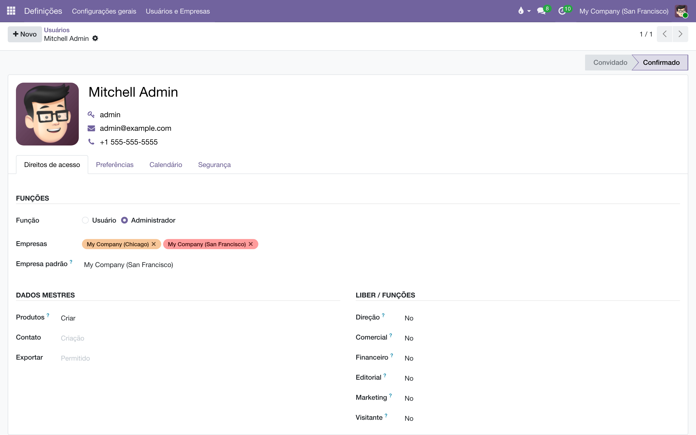

Papéis de acesso
Perfis prontos por área da editora — Comercial, Financeiro, Editorial, Marketing, Direção — e uma conta pública de visitante que enxerga tudo e não grava nada.
Visão geral
Os perfis nativos do Odoo são recortes por aplicativo: "Vendas: Usuário", "Contabilidade: Contador", "Estoque: Administrador". Uma editora não pensa assim — ela pensa por função: Comercial, Financeiro, Editorial, Marketing, cada uma em dois níveis, mais a Direção, que é transversal.
Este módulo faz a tradução de uma coisa na outra, uma vez só e por escrito. Quem cadastra um usuário marca uma função na ficha dele; o Odoo deriva sozinho todos os grupos de aplicativo que aquela função implica. Ninguém mais precisa montar acesso clicando grupo por grupo — e "quem pode ver a margem?" passa a ter uma resposta que não depende de conferir usuário por usuário.
A régua dos dois níveis é simples:
- Assistente — opera o dia a dia: cria e edita os documentos da sua área.
- Gerente — tudo do assistente, mais aprovar, configurar e ver os relatórios da área.
- Direção — leitura ampla do sistema e os boards financeiros; acumulável com uma função de área.
Fora da grade existe o Visitante: a conta da apresentação pública, tratada em seção própria abaixo.
Os perfis por departamento são uma primeira versão, pouco rodada em produção — a régua "assistente opera / gerente aprova" vai apertar em alguns lugares e folgar em outros. O visitante é a parte com garantia de teste automatizado. Trate a grade como ponto de partida, e ajuste os perfis no próprio módulo quando a prática pedir.
Configuração: atribuir uma função
- Abra e entre na ficha do usuário.
- Na aba de direitos de acesso, localize a seção Liber / Funções. Cada departamento aparece como uma escolha: Direção, Comercial, Financeiro, Editorial, Marketing, Visitante.
- Escolha o nível do departamento da pessoa — Assistente ou Gerente. Só isso: os grupos de Vendas, Contabilidade, Estoque etc. são preenchidos automaticamente.
- Salve. No próximo login o usuário vê os menus da sua função.
Um diretor que também opera uma área acumula as duas funções: marque Direção e o nível da área (ex.: Editorial ‣ Gerente). Direção sozinha dá leitura ampla e os boards — não os botões de operação.
Evite marcar grupos de aplicativo à mão por cima de uma função: é exatamente a manutenção manual que este módulo aposenta. Se uma função precisa de mais (ou menos) acesso, a mudança certa é no próprio perfil, para valer para todos que o carregam.
O que cada função enxerga e edita
A tabela resume a grade tal como instalada (v1):
| Função | Opera (cria e edita) | Enxerga além disso | Não vê / não faz |
|---|---|---|---|
| Direção | — (perfil de leitura; quem opera acumula outra função) | Relatórios contábeis (leitura), boards do orçamento, vendas, consignação, contratos de direitos, estoque, projetos | Configurar contabilidade; a v1 ainda não bloqueia edição nos apps operacionais |
| Comercial ‣ Assistente | Pedidos, acertos de consignação, devoluções, cadastro de clientes; movimenta estoque | Todos os documentos de venda da casa | Relatórios financeiros; configurar vendas e consignação |
| Comercial ‣ Gerente | Tudo do assistente + administra vendas e consignação: fecha acordos, cria campanhas, ajusta réguas de cobrança de devolução | Relatórios do canal comercial | Contabilidade e orçamento |
| Financeiro ‣ Assistente (cobrança) | Faturas, registro e preparação de pagamentos, conciliação; cadastro de parceiros | — | Relatórios contábeis, orçamento, boards, configuração fiscal |
| Financeiro ‣ Gerente | Contabilidade completa: valida e estorna, configura plano de contas e impostos; administra o orçamento; pagamentos de royalties | Boards financeiros e relatórios contábeis | — |
| Editorial ‣ Assistente | Contratos de direitos autorais (operação), fichas do catálogo, cadastro de autores | Cálculos de royalty (consulta) | Fechar períodos de royalty; dados financeiros |
| Editorial ‣ Gerente (editor) | Tudo do assistente + administra contratos, fecha períodos de royalty, arquiva títulos | Valores a pagar dos contratos | Pagar (isso é do Financeiro) |
| Marketing ‣ Assistente | Conteúdo do site (edição restrita) | — | Dados financeiros |
| Marketing ‣ Gerente | Publica e configura o site | Campanhas de consignação (acompanha; criar é do Comercial) | Dados financeiros |
| Visitante | Somente o chatter (comentários, atividades, anexos) | O sistema inteiro, em nível de visibilidade gerencial: vendas, consignação, contratos, orçamento, estoque, relatórios contábeis | Criar, alterar ou apagar qualquer documento; exportar dados |
Uma consequência que vale registrar: os boards financeiros se protegem sozinhos. O painel de orçamento exige os grupos de Orçamento e os relatórios contábeis exigem o acesso contábil de leitura — e só Direção e Financeiro ‣ Gerente recebem esses grupos. Não há uma trava extra a manter: a restrição cai da matemática dos perfis.

O visitante: a conta da apresentação pública
O Visitante é uma conta feita para circular — uma demonstração pública do sistema com dados de verdade na tela. Ela abre qualquer menu, roda qualquer relatório e conversa: pode escrever no chatter dos documentos, marcar pessoas, criar atividades e anexar arquivos. O que ela não faz, em lugar nenhum, é criar, alterar ou apagar um documento. Não emite um pedido; manda um recado.
O ponto importante é onde mora a trava: no servidor, na porta por onde passa toda gravação do sistema — não no menu, não no botão escondido. Isso significa que a proteção vale também para caminhos que a interface não mostra: uma chamada direta pela API ou uma URL colada no navegador batem na mesma recusa. Esconder menus protegeria a vitrine; a trava no servidor protege o sistema.
Quando o visitante tenta gravar, a mensagem explica em vez de assustar:
"Modo visitante: esta é uma conta de demonstração e não grava dados. Você pode navegar por todas as telas, abrir relatórios e escrever no chatter — mas não criar, alterar ou apagar registros."
Escolhas deliberadas do desenho, úteis de conhecer antes de uma apresentação:
- Visibilidade generosa, de propósito. Como a escrita está cortada no servidor, dar ao visitante o nível "gerente" na maioria dos apps não lhe dá poder nenhum — dá visibilidade. É a diferença entre demonstrar o sistema e demonstrar um sistema com metade dos menus faltando.
- Sem exportação. A conta é pública e circula; mesmo sem escrita, ela poderia levar a base embora numa planilha. O botão de exportar não existe para ela.
- Assistentes abrem e falham no fim. Janelas de assistente (importar, combinar, configurar) abrem e se deixam preencher — a recusa acontece no "Aplicar", quando o efeito tocaria um documento real. Numa demonstração, é melhor um assistente que abre e explica do que um menu que não responde.
- O que a conta grava é uma lista fechada. Chatter, seguidores, atividades, anexos e as preferências da própria sessão — e nada mais. Qualquer modelo novo que entre no sistema nasce bloqueado para o visitante, sem que ninguém precise lembrar de bloqueá-lo.
Uma fronteira dita em voz alta: automações internas que gravam com privilégio de sistema (login, tarefas agendadas, envio de e-mail) continuam funcionando com o visitante logado — é o que mantém a demonstração viva. Os botões comuns do Odoo (confirmar pedido, validar fatura) gravam em nome do usuário e ficam barrados.
Colocar a conta de visitante no ar
- Crie um usuário dedicado em (ex.: "Visitante", com um e-mail próprio).
- Na seção Liber / Funções, marque Visitante (demonstração) — e nenhuma outra função.
- Defina uma senha e distribua o acesso.
- Antes de divulgar, faça o teste de um minuto: logado como visitante, tente editar um contato e confirmar um pedido (deve aparecer a mensagem do modo visitante) e poste um comentário num documento (deve funcionar).
Não acumule o perfil Visitante com outra função no mesmo usuário: a conta é para circular em público, e qualquer outra função somaria permissões que não fazem sentido nela. Visitante anda sozinho.
Perguntas frequentes
Marquei a função e o usuário não vê o aplicativo X.
Primeiro confira se é o que a grade prevê (tabela acima) — boa parte dos "faltando" é desenho, não defeito. Se a função realmente deveria ver, o ajuste é no perfil (para valer para todos), não um grupo avulso naquele usuário.
O assistente do Comercial vê pedidos dos colegas. É assim mesmo?
Na v1, sim: o assistente vê todos os documentos de venda. Restringir a "só os próprios documentos" está previsto para uma fase seguinte.
A Direção consegue editar um pedido. Não deveria ser só leitura?
Na v1 a Direção enxerga tudo, mas ainda não está impedida de editar nos apps operacionais — o bloqueio de edição é fase 2. Se um diretor opera uma área, o caminho certo já é acumular a função da área.
O visitante abriu um assistente de importação. Isso é um furo?
Não: o assistente abre (é uma janela temporária), mas o efeito dele cai num documento real — e aí a gravação é recusada. É o comportamento desenhado.
Posso usar o visitante como "usuário de consulta" interno?
Funciona como leitura geral, com duas ressalvas: o nível de visibilidade é alto (relatórios contábeis inclusive) e não há exportação. Para consulta interna com recortes finos, o melhor é uma função de área.
Instalei um módulo novo. O visitante já está travado nele?
Sim. A regra é lista fechada do que pode: todo modelo novo nasce somente-leitura para o visitante. Liberar algo a mais é uma decisão explícita, no módulo.
- Orçamento — os boards que só Direção e Financeiro ‣ Gerente enxergam.
- Acordos de consignação — a área que o Comercial opera.
- Contratos de direitos autorais — a área do Editorial.